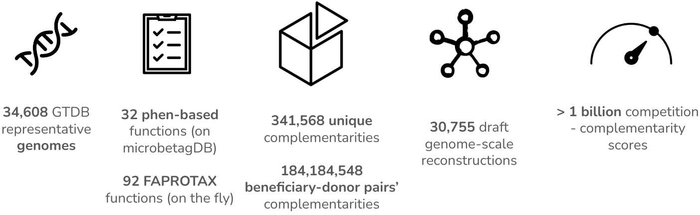

annotating microbial co-occurrence networks
background, documentation and a use case
Under development

View it on GitHub CytoscapeApp
About
Microbial interactions play a fundamental role in deciphering the underlying mechanisms that govern ecosystem functioning. Co-occurrence networks have been widely used for inferring microbial associations or/and interactions from metagenomic data. However, spurious associations and tool - dependence confine the network inference. The integration of previous evidence or/and knowledge can increase or decrease the confidence level of the retrieved associations. This way, associations can be further investigated and more reliable conclusions can be drawn.
microbetag implements data integration techniques to annotate both the nodes (taxa) and the edges (predicted associations) of such a network to enhance microbial co-occurrence network analysis for amplicon data. Have a look at the modules tab to get an overview of the methods used.

How to use
microbetag is available as a Cytoscape App Cytoscape is a well-established, widely used software for network data Integration, analysis, and visualization. All you need to do is to download and install Cytoscape and then visit the Cytoscape Appstore and search for microbetag.
Otherwise, you may click Apps > App manager.. after lunching Cytoscape, then search for “microbetag” in the pop-up box and click “Install”.
Once microbetag is installed, you are ready to lunch it using an OTUs/ASVs (amplicon data) or bins/MAGs (shotgun data) abundance tabl as input.
HOW TO USE AND INTERPRET MICROBETAG’s FINDINGS
For a thorough description of the app, please check the Cytoscape App tab.
In addition, microbetag’s annotations are also available through its Application Programming Interface (API). This way, one may have direct access to the microbetagDB and may export annotations for species or pair of species of interest, without the need of a network.
Cite us
In prep.
Funding
This project was funded by an EMBO Scientific Exchange Grants and the 3D’omics Horizon project (101000309).
License
- microbetag is under GNU General Public License v3.0. For third-party components separate licenses apply.